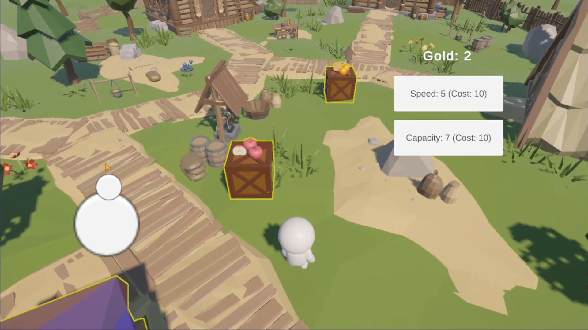
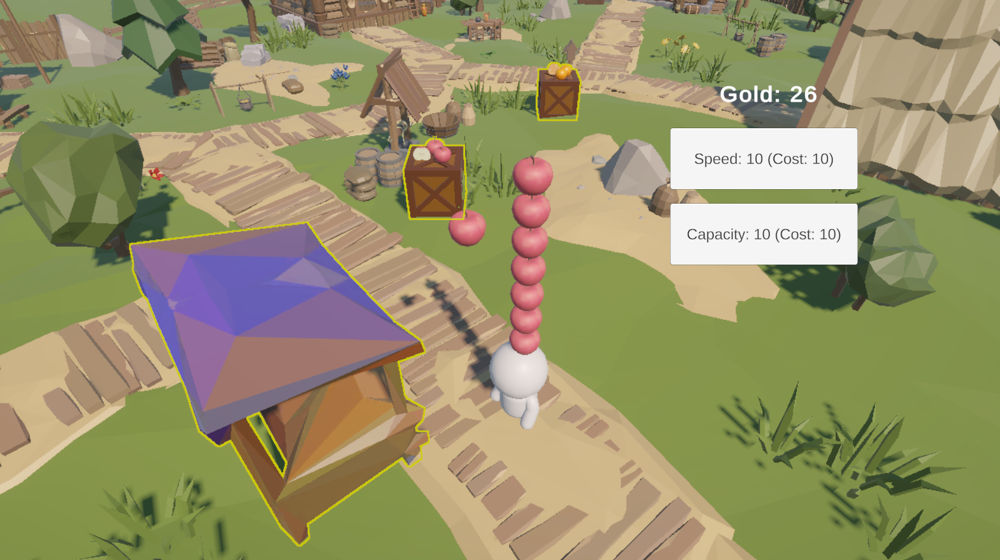
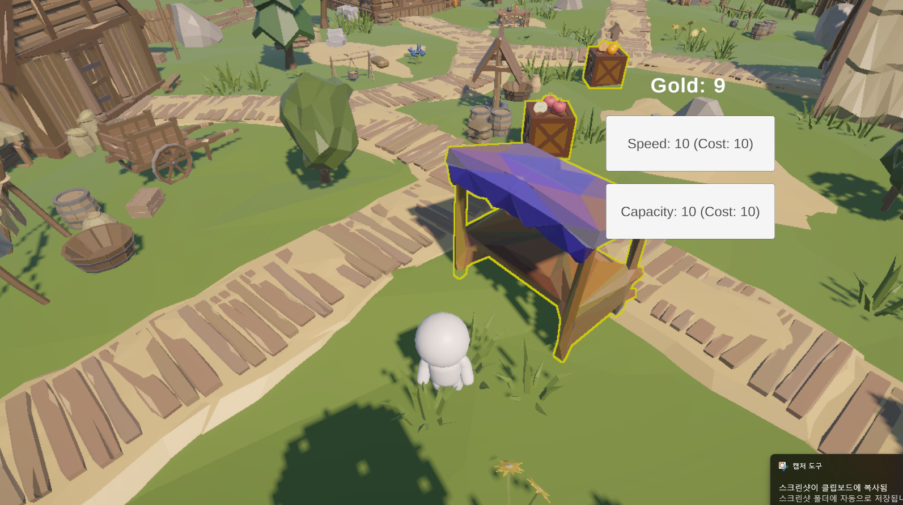
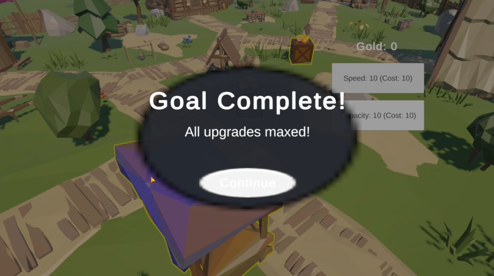

STACK
적재량에 따라 아이템 순차 배치
수집한 과일을 Stack Root 아래에서 관리하고, 일정 간격으로 배치해 캐릭터 뒤에 쌓이도록 구현했습니다. Capacity에 따라 최대 수집 개수를 제한합니다.
PERSONAL PROJECT · MOBILE CASUAL
아이템을 수집해 Stack하고 판매하여 Gold를 획득한 뒤, 캐릭터의 능력치를 성장시키는 3D 모바일 캐주얼 게임

CORE GAMEPLAY
수집과 판매를 반복해 Gold를 획득하고, 캐릭터의 Speed와 Capacity를 강화하는 짧은 반복 플레이 구조로 구성했습니다.
Floating Joystick으로 이동
생성된 과일 수집
캐릭터 뒤에 순차 적재
판매 존에서 자동 판매
Speed / Capacity 성장
두 능력치 MAX 시 클리어
01 · MOBILE INPUT
화면을 터치한 위치에 조이스틱이 생성되고, 드래그 방향을 이용해 캐릭터를 이동하도록 구현했습니다.

IMPLEMENTATION
IPointerDownHandler, IDragHandler, IPointerUpHandler를 이용해 Floating Joystick을 직접 구현했습니다.
조이스틱 입력은 CharacterController 기반 캐릭터 이동에 전달하며, 개발 중 Editor 테스트를 위해 WASD 입력도 함께 사용할 수 있도록 구성했습니다.
02 · GAMEPLAY
생성 존에서 아이템을 수집해 적재량 한도까지 쌓고, 판매 존으로 운반하면 Stack의 아이템이 하나씩 판매되도록 구현했습니다.

STACK
수집한 과일을 Stack Root 아래에서 관리하고, 일정 간격으로 배치해 캐릭터 뒤에 쌓이도록 구현했습니다. Capacity에 따라 최대 수집 개수를 제한합니다.
SELL
판매 존에 머무르면 Stack 상단의 아이템부터 하나씩 판매대로 이동한 뒤 제거되고, 판매된 수량만큼 Gold가 증가합니다.
03 · DATA / PROGRESSION
판매로 획득한 Gold를 사용해 이동 속도와 최대 적재량을 강화하며, 밸런스 데이터는 ScriptableObject로 분리했습니다.

SCRIPTABLEOBJECT
판매 가격, 기본 이동 속도, 기본 Capacity, Upgrade 비용과 증가량, 최대 Upgrade 횟수 등을 ScriptableObject로 관리했습니다.
수치 조정을 위해 게임 로직 코드를 직접 수정하지 않아도 되도록 데이터와 로직의 책임을 분리했습니다.
04 · SAVE / PROGRESS
앱을 종료한 뒤 다시 실행해도 Gold와 성장 상태가 유지되도록 로컬 저장 기능을 구현했습니다.
Gold, Speed, Capacity, Upgrade 횟수 및 게임 클리어 상태를 저장 데이터로 관리합니다.
JsonUtility를 이용해 Save Data를 JSON 형태로 직렬화합니다.
Application.persistentDataPath를 이용해 기기 로컬 저장 경로에 데이터를 기록합니다.
Scene 시작 시 저장 데이터를 불러와 이전 진행 상태를 복원합니다.
UX / POLISH
핵심 플레이 루프를 구현한 뒤 실제 플레이에서 필요한 정보 전달과 피드백을 보완했습니다.
맵 배치 후 상호작용 가능한 오브젝트의 식별성이 떨어지는 것을 확인하고, URP Outline을 상시 표시하도록 적용했습니다.
최초 실행에서만 조작 방법을 보여주는 전체화면 Tutorial Overlay를 구현했습니다.
수집, 판매, Upgrade 상황에 효과음을 적용하고, 반복 재생되는 BGM을 추가했습니다.
Speed와 Capacity가 모두 최대 단계에 도달하면 Game Clear UI를 표시하도록 구성했습니다.

DEVELOPMENT
Unreal Engine / C++ 프로젝트 경험을 기반으로 Unity와 C#을 새롭게 학습하며 약 10일간 모바일 3D 캐주얼 게임의 한 사이클을 완성했습니다.
개발 과정에서 Claude Code를 코드 분석, 구현 보조 및 리팩터링 검토 도구로 활용했습니다.